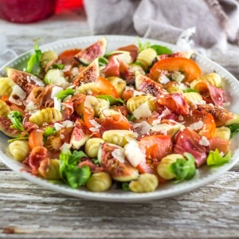

Salade de figues

Vous ne pouvez pas savoir à quel point je suis heureuse de partager avec vous cette recette de salade de figues, gnocchis et compagnie!! Depuis que je l’ai faite (dès que les premières figues ont pointé le bout de leur nez) je ne m’arrête plus! J’en rêve carrément!
Si si je vous assure que je n’exagère pas! Je ne sais pas pourquoi je rêve de cette salade de figues depuis que je l’ai faite la toute première fois et du coup on y a droit assez (trop) souvent. Bon déjà je ne vous cache pas que des figues mélangées à du jambon de parme et du parmesan j’adore ça mais avec les gnocchis en plus c’est juste WAOUH trop trop bon! Ce jour-là, on n’avait pas prévu grand chose et toutes ces saveurs sont venus à moi comme une évidence et je peux vous dire qu’il y en a un qui a carrément adoré (monsieur qui n’aimait pas du tout les figues^^)! Le problème quand on aime les figues et qu’on n’a pas de figuiers chez soi (ni de champs à proximité dans lequel se trouve un figuier sur lequel on pourrait aller piquer de bonnes figues) c’est le prix! Comme ce que je disais quand je vous parlais des cerises et de mon clafoutis, les figues c’est exactement pareil, c’est beaucoup trop cher mais si comme moi vous les aimez et vous ne pouvez pas vous en passer alors cette recette est parfaite car il n’y a pas besoin d’en acheter tout un paquet.
Je vous laisse avec cette petite recette rapide de salade de figues qui je l’espère vous plaira autant qu’à nous 🙂 et si vous êtes amateurs de figues vous aussi ces bruschettas devraient particulièrement vous plaire et il faut en profiter tant que c’est la saison!!
Ingrédients
- Gnocchis - 380g
- Jambon de parme - 4 tranches fines
- Tomates - 2
- Figues - 8 moyennes
- Copeaux de parmesan
- Roquette
- Huile d'olive - 3 càs
- Vinaigre balsamique - 1càs
- Miel - 1càc
- Sel - 1 pincée
- Moutarde - la pointe d'un couteau
Instructions
- Sortez vos assiettes
- Faire cuire les goncchis
- Quand ils sont cuits verser un filet d'huile d'olive dans la casserole et remuer pour éviter qu'ils ne collent
- Couper vos tomates en rondelles
- Couper vos figues en quartiers
- Détailler le jambon en morceaux assez grossiers
- Dans chaque assiette, disposer de la roquette un peu partout
- Ajouter des rondelles de tomates
- Terminer en disposant par ci par la les quartiers de figues et les gnocchis (moi je les compte comme ça pas de jaloux 😉 )
- Dans un bol mélanger tous les ingrédients
- Arroser la salade de cette vinaigrette
- Saupoudrer de plein de copeaux de parmesan
- Déguster
Les tips de la communauté
Salade estivale original avec figues, gnocchis froids, très belles couleurs. Idée inattendue de gnocchis en salade au lieu de chaud. Photo magnifique universellement saluée.
Astuces
- Gnocchis froids apportent texture et surprise en salade
- Figues apportent sucre naturel et texture
Variantes suggérées
- Aspérges croquantes avec parmesan et tomates cerises en variante printanière